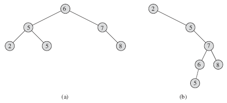
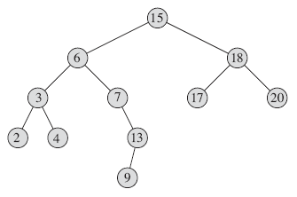
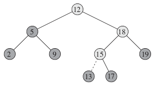
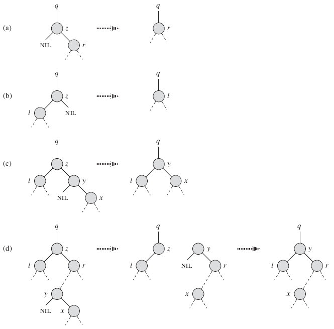

12.1 What is a binary search tree?
마디 구성 요소
| key | 마디값 |
| left | 왼쪽 자식 |
| right | 오른쪽 자식 |
| p | 부모 |
* 자식이나 부모가 없으면 NIL값을 넣어준다.
근(根) 마디 (root node): 최상단에 위치한 마디

그림 12.1 이진 탐색 나무. 마디의 왼쪽 부분 나무의 값은 x값과 같거나 작다. 오른쪽 부분 나무의 값은 x값과 같거나 크다. (a) 높이가 2이고 마디 6개를 가진 이진 탐색 나무. (b) a와 같은 값을 가진 높이 4인 비효율적인 이진 탐색 나무.
이진 탐색 나무 속성(binary-search-tree property)
| x를 이진 탐색 나무의 마디라고 하자. y가 x의 왼쪽 부분 나무의 마디면 y.key ≤ x.key 이다. y가 오른쪽 부분 나무의 마디면, y.key ≥ x.key 이다. |
나무 출력 방법
중위 운행(inorder tree walk)
왼쪽에 위치한 부분 나무 탐색 -> 해당 부분 나무의 근이 가진 값 출력 -> 오른쪽에 위치한 부분 나무 탐색
전위 운행(preorder tree walk)
각 부분 나무 출력 전에 근을 출력
후위 운행(postorder tree walk)
각 부분 나무 출력 후에 근을 출력
INORDER-TREE-WALK(x)
if x ≠ NIL
INORDER-TREE-WALK(x.left)
print x.key
INORDER-TREE-WALK(x.right)
예) 그림 12.1에서 중위 운행법의 탐색 결과는 2,5,5,6,7,8 이다.
정리 12.1 x가 마디 n개를 가진 부분나무의 근이면, INORDER-TREE-WALK(x)는 Θ(n) 시간이 걸린다. |
12.2 Querying a binary search tree
이진 탐색 나무는 SEARCH 연산 뿐만 아니라 MINIMUM, MAXIMUM, SUCCESSOR, PREDECESSOR 연산을 지원한다. 모든 연산 시간은 O(h) 이다. h는 나무의 높이(height)이다.
searching
TREE-SEARCH(x,k)
if x == NIL or k == x.key
return x
if k < x.key
return TREE-SEARCH(x.left,k)
else return TREE-SEARCH(x.right,k)
TREE-SEARCH는 아래와 같이 반복문의 형태로 바꿀 수 있다.
ITERATIVE-TREE-SEARCH(x,k)
while x ≠ NIL and k ≠ x.key
if k < x.key
x = x.left
else x = x.right
return x

그림 12.2 이진 탐색 나무 질의(query). 13을 검색하기 위해서 15 → 6 → 7 → 13 경로(path)를 따라가야 한다. 최소값은 2이고, 근의 왼쪽 포인터들을 따라가면 나온다. 최대값은 20이고, 근의 오른쪽 포인터들을 따라가면 나온다. 15값을 가진 근 마디의 후임자는 17값을 가진 마디이다. 근 마디의 오른쪽 부분트리 중 가장 작은 값이 17이기 때문이다. 13값을 가진 마디는 오른쪽 부분 트리가 없고 따라서 후임자는 x와 가장 근접한 위치에 있는 조상이다. 여기서는 근 마디가 후임자이다.
Minimum and maximum
가정: x는 NIL이 아니다.
TREE-MINIMUM(x)
while x.left ≠ NIL
x = x.left
return x
TREE-MAXIMUM(x)
while x.right ≠ NIL
x = x.right
return x
Successor and predecessor
가정
- 모든 키는 서로 다르다.
후임자(successor): 마디의 바로 다음 순서로 큰 수
전임자(predecessor): 마디의 바로 이전 순서로 작은 수
TREE-SUCCESSOR(x)
1 if x.right ≠ NIL
2 return TREE-MINIMUM(x.right)
3 y = x.p
4 while y ≠ NIL and x == y.right
5 x = y
6 y = y.p
7 return y
1~2번줄: x.right이 NIL이 아니라면 x의 오른쪽 부분 트리의 가장 왼쪽 노드가 successor이다.
3~7번줄: x의 오른쪽 부분 트리가 비어 있고 x가 successor y를 가지면, y는 x와 가장 근접한 위치에 있는 조상(ancestor)이다.
예) 그림 12.2에서 키 13의 successor는 키 15이다.
조상: 근 r과 마디 x 사이에 있는 경로에서 x 위에 있는 모든 마디
TREE-PREDECESSOR는 TREE-SUCCESSOR와 과정이 동일하다.
정리 12.2 동적 집합 연산인 SEARCH, MINIMUM, MAXIMUM, SUCCESSOR, PREDECESSOR는 O(h) 시간 내에 실행된다. |
12.3 Insertion and deletion
Insertion
TREE-INSERT(T,z)
y = NIL
x = T.root
while x ≠ NIL
y = x
if z.key < x.key
x = x.left
else x = x.right
z.p = y
if y == NIL
T.root = z
elseif z.key < y.key
y.left = z
else y.right = z

그림 12.3 이진 탐색 트리로 13값을 가진 마디를 삽입하기. 얕게 칠해진 마디는 근으로부터 마디를 삽입하는 곳까지 내려가는 단순 경로를 나타낸다. 점선은 삽입하려는 마디와 나무의 연결을 나타낸다.
Deletion

그림 12.4 이진 탐색 나무로부터 마디 z를 삭제하기. 마디 z는 근 또는 왼쪽자식 또는 오른쪽 자식일 수 있다. (a) 왼쪽 자식이 없는 마디 z. (b) 오른쪽 자식이 없는 마디 z. (c) 두 개의 자식이 있는 마디 z. y는 z의 후임자이면서 자식이다. (d) 두 개의 자식이 있는 마디 z. y는 후임자이지만 자식이 아니다.
TRANSPLANT는 마디 v를 마디u 자리에 이식하는 알고리즘이다.
TRANSPLANT(T,u,v)
if u.p == NIL
T.root = v
elseif u == u.p.left
u.p.left = v
else u.p.right = v
if v ≠ NIL
v.p = u.p
TREE-DELETE(T,z)
if z.left == NIL
TRANSPLANT(T,z,z.right)
elseif z.right == NIL
TRANSPLANT(T,z,z.left)
else y = TREE-MINIMUM(z.right)
if y.p ≠ z
TRANSPLANT(T,y,y.right)
y.right = z.right
y.right.p = y
TRANSPLANT(T,z,y)
y.left = z.left
y.left.p = y
정리 12.3 동적 집합 연산인 INSERT, DELETE는 높이 h인 이진 탐색 나무에서 각각 O(h) 실행시간을 갖는다. |
12.4 Random built binary search trees
n개의 키를 가진 무작위로 생성된 이진 탐색 나무(randomly built binary search tree)가 있다고 가정하자. (빈 나무에 무작위로 값을 삽입해서 나무를 만들며, n! 순열의 순서로 동등하게 삽입이 이루어진다.) 그러면 다음의 정리를 만족한다.
정리 12.4 n개의 서로 다른 값을 가지며 무작위로 생성된 이진 탐색 나무의 기대 높이는 O(lg n) 이다. |